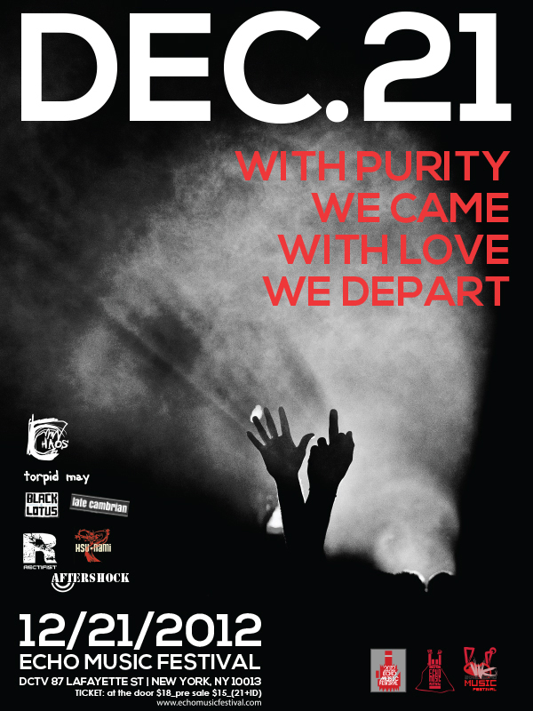
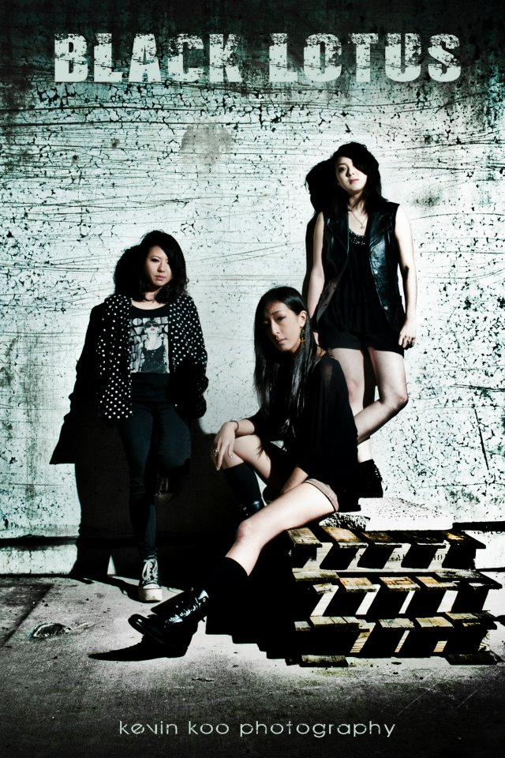
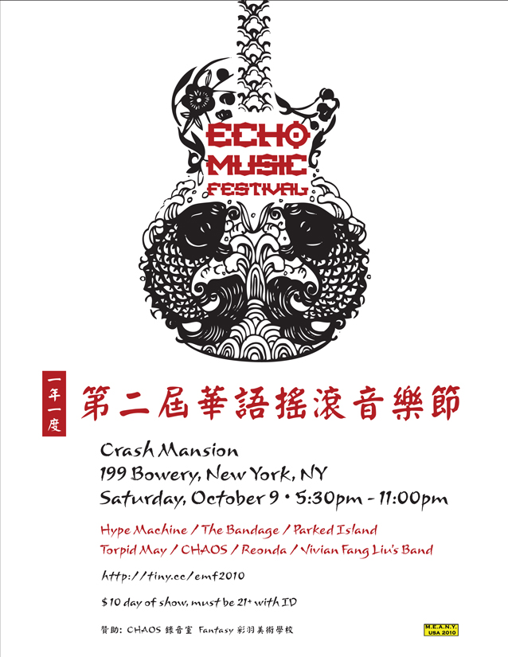

圣诞PARTY
我们没有2012的船票,但我们有音乐,只要有音乐和就不会有世界末日!!
一年一度的回响音乐节EMF(Echo Music Festival)将在12.21.2012年在知名的
DCTV 87 LAFAYETTE 隆重登场。历经4个年度，EMF已经
成为纽约华语原创音乐最有影响力的音乐活动.最重要的是我们有喝不完的酒,热情的观众和乐队,5个多小时不停歇的音乐
With purity we came,with love we depart!

| Show Schedule | Door Opens |  |
 |
Our Sponsors | |||||
|---|---|---|---|---|---|---|---|---|---|
| 5:30pm | 6:00pm | 6:30pm | 7:10pm | 7:50pm | 8:35pm | 9:25pm | 10:15pm | Sponsors |
本届音乐节演出乐团
EMF历届最强阵容，拭目以待！
Band Bio
Hsu-Nami
Blending the hauntingly versatile traditional Chinese violin (ErHu) with modern American rock engineering – meet The Hsu-Nami!
An international renowned Erhu fronted instrumental prog-rock band from the New York city. The Hsu-Nami.
Integrates an amplified electric ”erhu”, a tweaked two-string spike fiddle used in Chinese classical and folk music,
into a rock lineup. The band typically compose lengthy erhu melodic-based instrumental pieces that feature dynamic contrast,
heavy guitar riffs, melodic bass guitar lines and trading solo. Part of the new-fusion rock movement, the Hsu-Nami redefines the
1960s and 1970s progressive fusion rock. Hsu-Nami’s music was featured in the 2008 Summer Olympic in Beijing.
The track “Rising of the sun” was the theme music representing the Chinese Basketball team entrance theme. The Hsu-Nami (New York city)
has been building their brand since its inception in 2005 with an explosive live show and their exceptional musicianship.
Behind two independent releases, “Entering the Mandala” (2007), and “The Four Noble Truths” (2009).
中文
Hsu-Nami樂團
將電子二胡融入搖滾音樂，充分顯現出台灣與美國文化的交流互動。證明了要生存於搖滾世界，標奇立異乃是必然。要捕捉聽眾的貪新忘舊、見異思遷、獵奇心理，就要獨樹一幟。
The Hsu-nami是2005年秋成軍的一支以電子二胡為主角的前衛融合搖滾樂團。在紐約的樂團中佔有一席之地的Hsu- nami擁有出色的音樂才能。
“Entering the Mandala”(2007) 及 “The Four Noble Truths” (2009),在兩張獨立發行的專輯之後，展開了一系列令人印象深刻的演出。
2010年在紐約CMJ Festival摩登天空的中國之夜是標題樂團, 2011年四月，在台灣各地巡迴演出，從墾丁春天吶喊，到高雄，台中及台北。
十月在中國鎮江和北京超過十萬人的摩登天空草莓音樂節演出。
The Hsu-nami的作品“Rising of the Sun“在2008年北京奧運會中作為中國籃球隊的入場音樂。
成員均為美國人的Hsu-Nami樂團 拉電子二胡的團長許正杰(Jack Hsu). 而此團名「Hsu-Nami」，則是字頭取團長許正杰姓氏的英文拼音「Hsu」，
加上Nami組成團名，英文發音「海嘯」(Tsunami)一樣。 基地在紐約的Hsu-Nami，不是只有熱情搖滾，團員們也都關心社會大事，
他們曾多次在紐約舉行義演，利用世界首都高能見度的地緣優勢，為亞洲發聲。當2009年莫拉克侵襲台灣時，他們與來自台灣的「拷秋勤」
一起在紐約表演募款。當2011年日本地震，他們也與女子樂團「Go-Chic」上台呼喊捐獻。
樂團有許正杰(Jack Hsu)電子二胡手，布蘭特(Brent Bergholm)吉他手、德瑞爾(Derril Sellers)貝斯手、
約翰(John Manna)鼓手 、達娜(Dana Goldberg)鍵盤手
Visit Official Website
Visit Official Website
CHAOS
is an alternative rock band from Chinatown NY. The project started by Steven Lin and
Mecca T.D back in 2004 but didn't get out of their garage and play until guitarist
Wai Wong and drummer Masa Sakuma join in late 2008.
The band made their debut on the 1st Echo Music Festival which was organized by local bands in Chinatown.
Since then, the band's line-up has persistently altered throughout their existence.
By late 2011, the band had a more stable line-up
after Vincent(Guitarist) and Jeff(drummer) joined and had developed a progressive sound mingling
hard rock, chinese folk music, metal and alternative rock.
By early 2012, the group put the band back in the garage,
off from stage and focusing all of their energy on finishing up
their first studio album titled "In This Life We Met". They are aiming to release the
self-titled album in this coming Echo Music Festival.
Black Lotus
is a band formed with 3 girls and based in NYC. All 3 girls have
very different styles, and combining all three together makes "Black Lotus". The band consists of Alicia
(Guitar/Vocal), Kana (Bass/Vocal), and Narina (Drums/Vocal).

TorpidMay
F
ormed in 2009 in New York City, combining elements of pop, grunge, noise, punk and ambient rock,
Torpid May creates a melodic sound that is delicate and coarse, somber and affecting, dreamy and stern.
The eclectic blend of sounds, like an act of collage making, overlaying and contaminates audiences’ senses –
like the city that gives birth to their music, Torpid May invites you to start experiencing and stop feeling –
as senses slowly becoming overloaded…
成立於2009年的紐約市, Torpid May 樂團的音樂取向融合了流行, Grunge, 噪音, 龐克和氛圍搖滾的元素, 曲風中帶著沉重旋律感,
幽暗中有著剛烈, 迷幻中不失的自我意識. 猶如他們存在的城市,不論你是盲從, 是執著, 是迷失, 還是堅持, Torpid May 的搖滾邀請你去感受,
去跳脫杵在原地畫了的框框, 抓住僅存的瘋狂. 在踏著虛虛實實交集之於, 在感官暴漲之際…
Band bio
Late Cambrian
is an indie rock band out of Greenpoint, Brooklyn. John N Wlaysewski (Flying Machines, The Attorneys)
convened with Colin Schiller (Drummer) in January of 2011 to record what would become their debut album, The Last Concert.
John played the guitar, bass and synthesizer on this debut with Colin lending his drumming and percussion duties.
The first five songs on the CD were tracked January 8-10. The next four were tracked in February with O lending here
high airy backing vocals to three of the final tunes. The band put out a craigslist ad to find a bass guitarist
and eventually added Nunzio Moudatsos (A Crimson Affair) as their official bass player. The unit intact,
Late Cambrian took their melodic indie pop/rock sound to the stage in late March of 2011.
Late Cambrian have been compared to The Arctic Monkeys, The Kooks and The Strokes. They have also been compared to Weezer
in numerous articles and album reviews, mostly due to the albums dense guitar attack and
More
high sing song melodies. The lyrical content tends to be existential in nature, tackling subjects such as aging,
the cult of celebrity and being a shut in. They bring a thoughtful approach to songwriting,
with many of the songs going through tempo and key changes when it serves the song's higher purpose.
Late Cambrian recently won The Kickoff To KahBang contest and traveled to
Bangor Maine to open for The Gay Blades. They have also been featured on Broke Ass Stuart, numerous other tastemaking blogs.
Their music is available on Itunes, Amazon and CD Baby and they recently procured Japan
distrobution which has sold out of their 1st run of cd's !
Late Cambrian is a band to watch, as their 2nd release of brand new material is being mixed in March of 2012.
John has played in The Attorneys, Flying Machines, Jessie Diamond and The Thousand and other New York projects.
He brings all he has learned from these experiences to the songwriting and feel of the music in Late Cambrian.
He has had music placed on MTV, Oxygen, USA Network, and NBC.
Visit Official Website
Rectifist
is a New York City Hard Rock/Metal band formed in 2012 by Steve, Sylivan, CY, Jeff, and Spark.
They were all in a temporary experimental project called X-Scale prior to this group's formation.
After that, they have decided to form a permanent band and be a part of the growing underground music scenery in NYC.
The band name is derived from the word "Rectifier". A rectifier is an electrical device
that converts alternating current (AC), which periodically reverses direction, to direct current (DC), which flows in only one direction.
Alternatively, rectify can also mean to make, put, or set right. Thus, rectifier can also mean a
person or thing that rectifies. The suffix "-ist" is one who follows a principle or system of belief.
Therefore, Rectifist is a single unity determined to stand out and speak for our culture, society,
and the world we live in through our music
Aftershock
Started by drummer Zhao Cheng, a local musician and philanthropist, former member of MIC and Kinky Kinks,
Aftershock was firstly deemed as continuation of Kinky Kinks.
However, due to various reasons former members of Kinky Kinks left the band as new members joined, the group
is practically new and different from before.
Zhao had played in all kinds of venues for over ten years in New York,
and therefore making him an experienced veteran musician. His drumming style is versatile and dynamic,
which offers the audience never tiring beats.
Pei Pang joined the New Kinky Kinks in June 2012 before it was changed to Aftershock.
As the previous vocalist/rhythm guitarist and songwriter of Pittsburgh based alternative rock band Free Bullets,
Pei helped Zhao create the new band and came up with the name "Aftershock". With influence from a wide range of musicians and styles,
Pei is now the main songwriter, vocalist, and rhythm guitarist for Aftershock.
Dong Li, hailed all the way from Beijing, joined the band in August 2012 as lead guitarist.
He started playing guitar since middle school, and have later played with several rock bands based in China.
As time goes by, he expanded his music style from technique and speed to more interesting tunes. And of course,
he is also an awesome rapper that sings in a couple of Aftershock's songs.
Qingyun Luo, aka Luo Bei, performs bass in the band. He was the bassist for Jet-Lag and also now plays in the J-Punk band Asterplace.
As an experienced bassist, Luo Bei is capable of delivering great dynamics and versatility to Aftershock's original music.
EMF序
激烈的电吉他，震撼的鼓声冲击耳膜，挑战听觉极限，嘶吼的歌声，渲泄内心情感，不管是悲伤，愤怒，抑或是喜悦，希冀，在那一刻，
所有的情绪都可以淋漓尽致，无所不能地汹涌澎湃。当你置身其中，你会发觉你的灵魂深处一直有对自由向往的血液在流淌，不管你披上怎样平静，华丽的外衣。
这就是摇滚的魅力，用最直接甚至残酷的方式直面真实的自己，真实的世界，在批判的冲锋和沦陷中占领着音乐先锋的地位。
尽管摇滚总是容易和颓废，性，毒品沾边，有人形容是废墟上的花朵。然而，我们认为，摇滚是理想主义者的批判和怀疑，
是独立人性的探索和精神涅磐，它温情脉脉却壮烈激昂。也许在漂泊中追逐理想和冰冷的现实中深切的无奈让摇滚音乐总是在夹缝中生存，
时而顽强，时而脆弱，但相信， 我们都需要音乐家园
EMF以往举办过的活动
2012.02.12 新春追龙派对
活动主页
2011.12.23 第三届EMF回响音乐节
活动主页
2009/10/17 - 桔子入侵中国人来啦
2009/4/1 - 第一届话语原创话语摇滚音乐节
Sinovision


